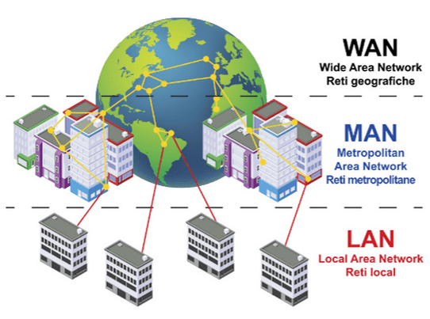

Jenis Jaringan Komputer berdasarkan Jangkauan Geografis

- PAN (Personal Area Network)
- Deskripsi: untuk komunikasi antara perangkat pribadi dalam jarak sangat dekat,
biasanya dalam radius beberapa meter.
- Contoh: Koneksi Bluetooth antara ponsel dan headphone, atau sinkronisasi data
antara ponsel dan komputer.
- LAN (Local Area Network)
- Deskripsi: mencakup area geografis kecil, seperti rumah, kantor, atau sekolah.
LAN menghubungkan perangkat dalam satu lokasi yang sama.
- Contoh: Jaringan komputer di sebuah kantor atau sekolah yang memungkinkan berbagi
printer, file, dan internet.
- CAN (Campus Area Network)
- Deskripsi: Jaringan yang lebih besar dari LAN tetapi lebih kecil dari MAN,
biasanya mencakup beberapa bangunan di area kampus atau perusahaan.
- Contoh: Jaringan yang menghubungkan beberapa bangunan universitas atau kantor
pusat perusahaan di satu lokasi.
- MAN (Metropolitan Area Network)
- Deskripsi: Jaringan yang mencakup area yang lebih besar daripada LAN tetapi lebih
kecil daripada WAN, biasanya meliputi seluruh kota atau wilayah tertentu.
- Contoh: Jaringan yang menghubungkan beberapa kantor cabang perusahaan dalam satu
kota atau jaringan internet kota.
- WAN (Wide Area Network)
- Deskripsi: Jaringan yang mencakup area geografis yang sangat luas, seringkali
negara atau bahkan benua. WAN digunakan untuk menghubungkan LAN dan MAN di berbagai
lokasi yang jauh.
- Contoh: Internet adalah contoh WAN terbesar yang menghubungkan jutaan perangkat di
seluruh dunia.